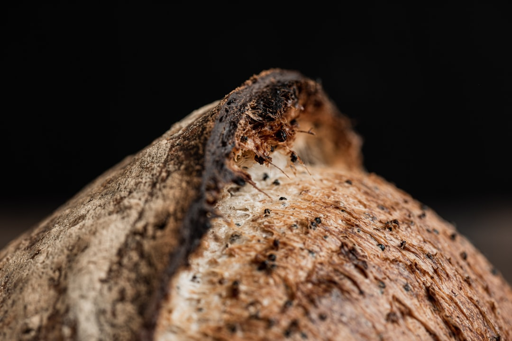

Entry · Sunday, May 3, 2026

Plate N., A gathering of Cavendish bananas basking in their sunlit glory.
Photo by Ian Talmacs on Unsplash
Banana, Cavendish
/kuh-VEN-dish buh-NAN-uh/ n.- 1. A cultivar of banana (Musa acuminata) renowned for its robust and curvaceous physique, often found lounging in fruit bowls and breakfast spreads across the globe.
- 2. colloq. The thiccc fruit that knows it's the main course in your smoothie game.
In a sentence,
"The Cavendish banana's thiccc silhouette made the fruit basket feel like an art gallery centerpiece."
Etymology,
Named after William Cavendish, the 6th Duke of Devonshire, who first grew the variety in his garden greenhouse in the 19th century. Kind of like if your houseplants got jealous and decided to bulk up.